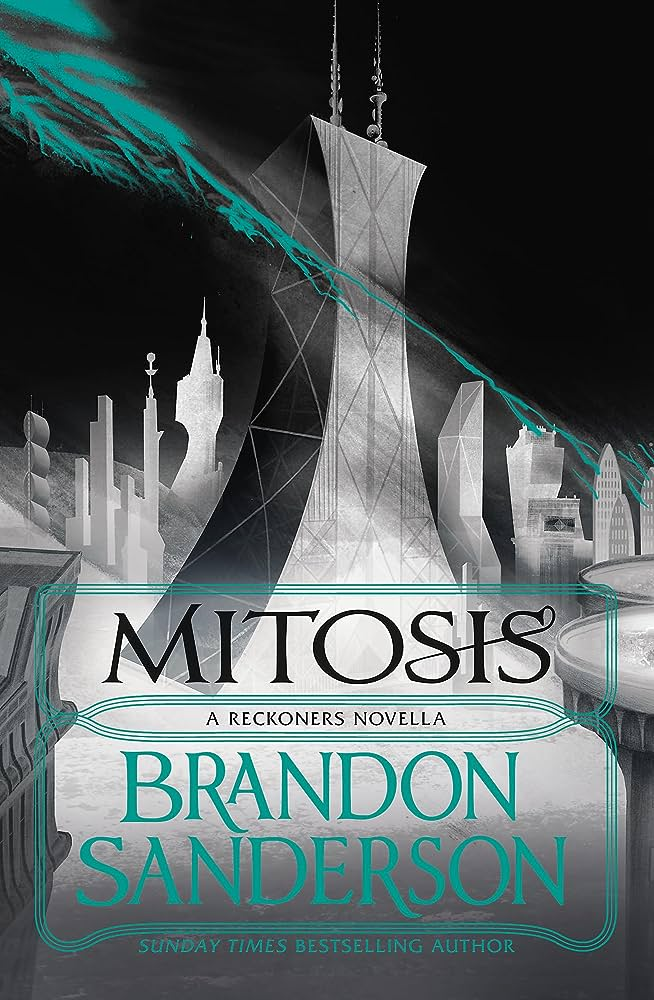
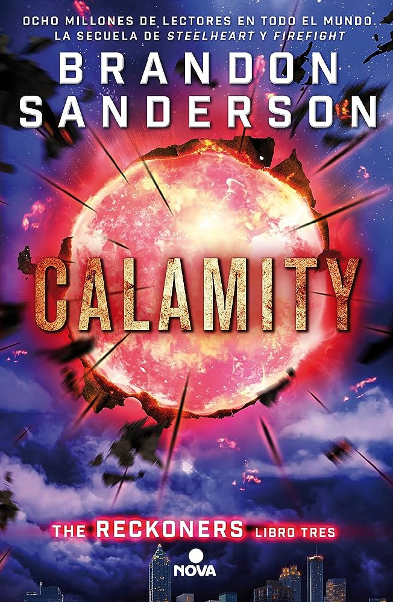
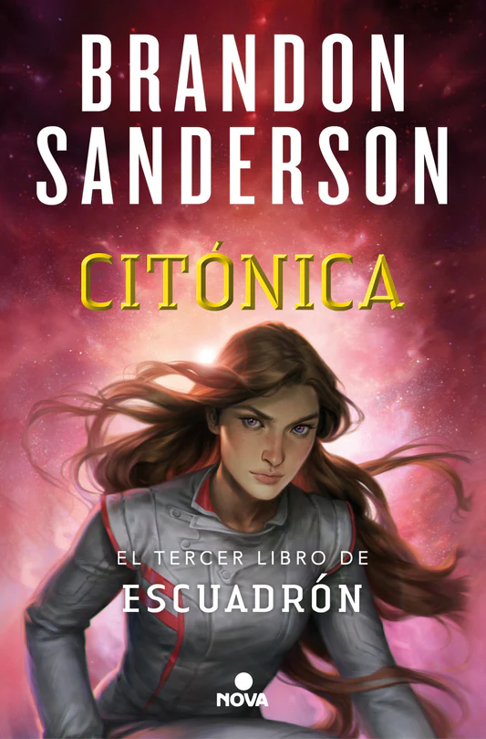
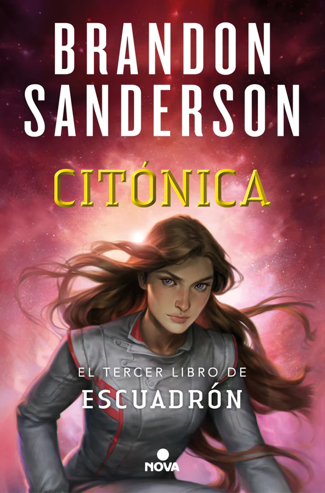
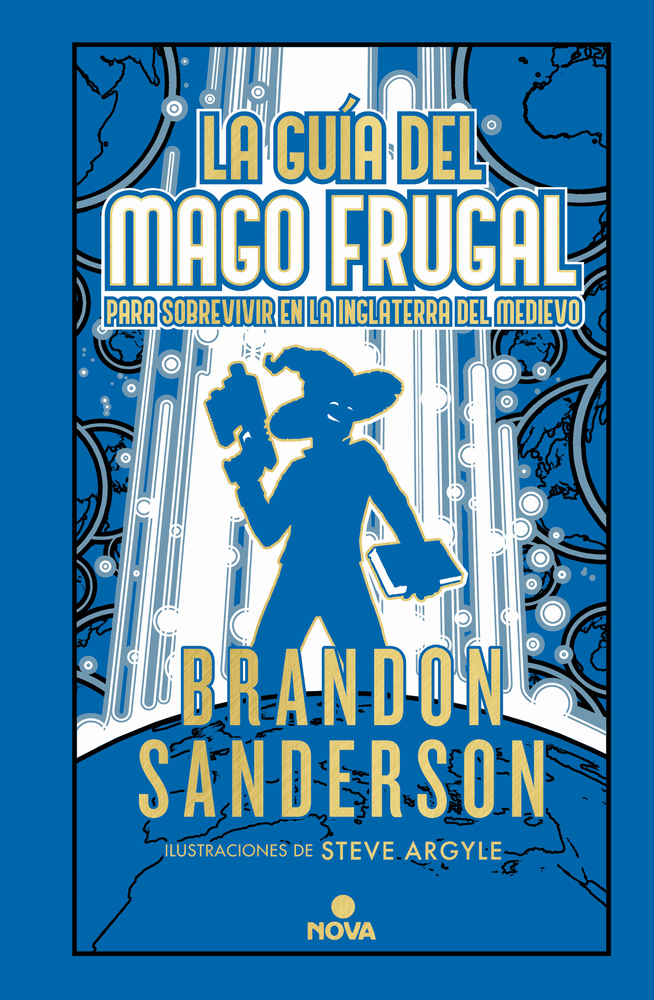
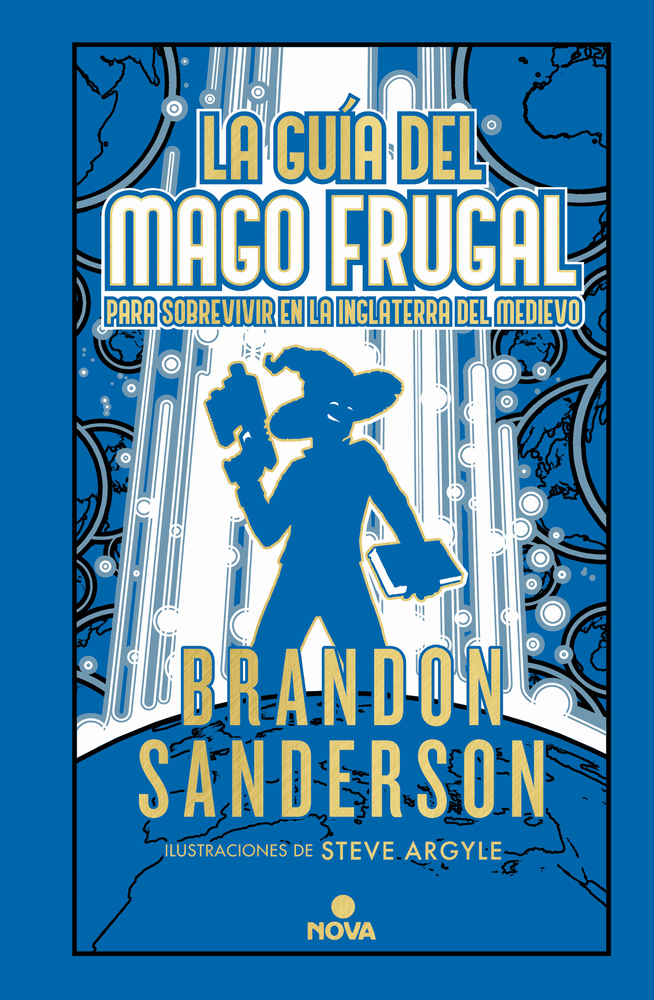
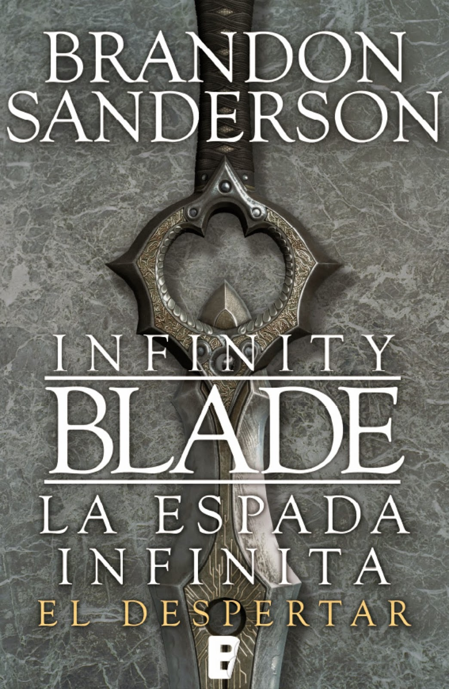
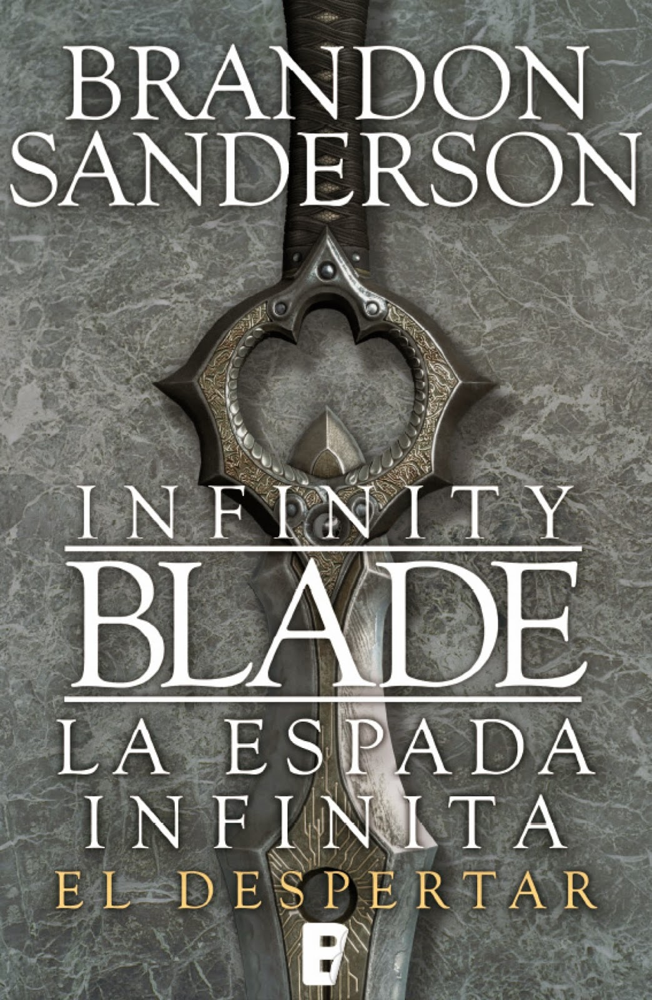

Alcatraz
Alcatraz se trata de una saga de libros juveniles. Nombrada por su personaje principal, Alcatraz Smedry, y con inicio de publicación en 2007. Su trama nos habla de un joven quien, acompañado de un pequeño grupo de amigos y familiares, deben detener a un malvado culto de biblotecarios quienes buscan gobernar el mundo.
Citoverso
Ambientado en un futuro muy lejano de nuestro mismo universo, y con su primera obra en 2009, nos transporta a una ambientación con elementos de fantasía, en la cual se nos presentan numerosas "especies especiales" que habitan esta tierra futurista, y quienes comparten un sistema de magia conocido como "citónica".
Los Reckoners
Dirigida a jovenes adultos y con inicio de publicación en 2013, se ambienta en una versión alternativa de la tierra del siglo 21 en la cual un gran objeto rojo apareció en el cielo, trayendo consigo poco despues a los que se conoce como "epicos", quienes son humanos con super poderes.




La Rueda del Tiempo
Trás el fallecimiento de Robert Jordan en 2007, Brandon Sanderson fue elegido para finalizar su gran obra: La Rueda del Tiempo. De esta forma, co-escribio las últimas tres novelas pertenecientes a esta, ademas de escribir dos novelas cortas para complementar el universo.
Standalones


 



 

 
